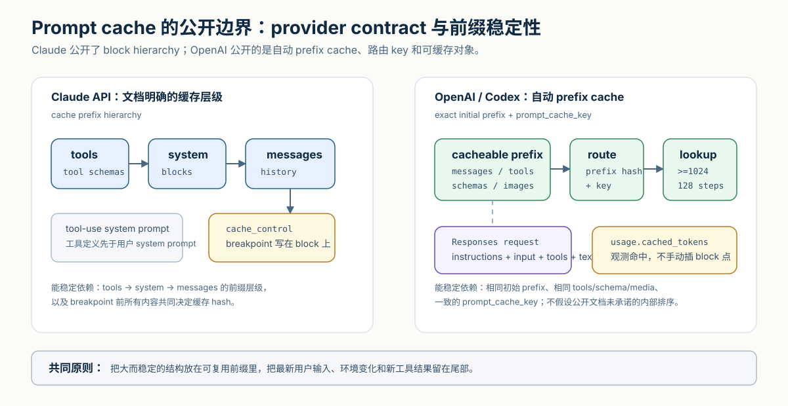
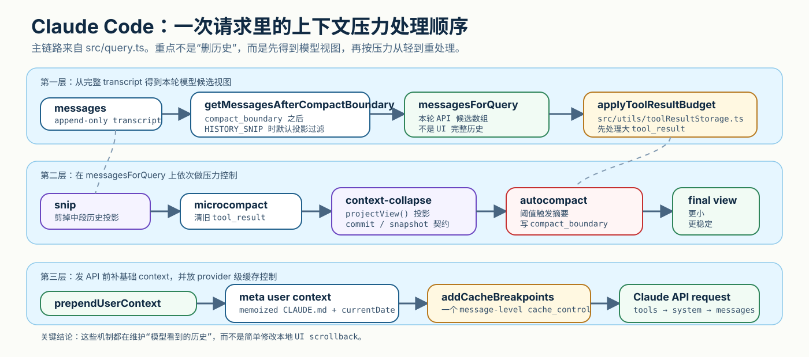
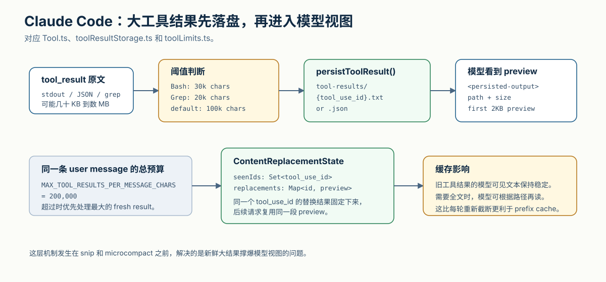
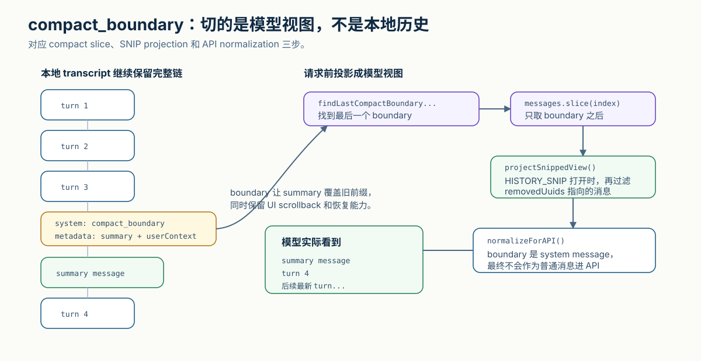
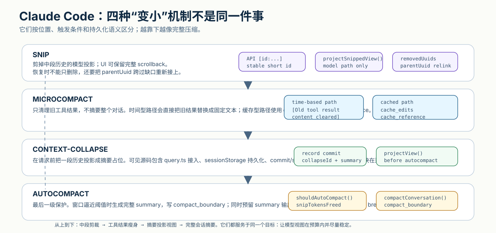
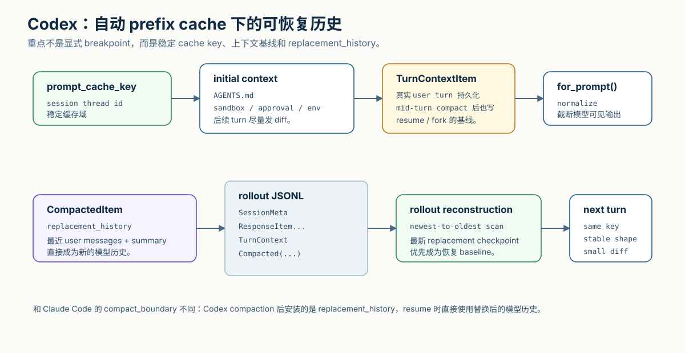

Claude Code 和 Codex 的 Prompt Cache 设计：关键在模型视图

长时间使用代码 Agent 时，最先撞上的问题通常不是“模型会不会写代码”，而是上下文怎么活下去。
一轮请求里可能有系统规则、工具定义、项目说明、运行环境、历史消息、工具输出、图片、文档、摘要和最新用户输入。前几轮还好，几十轮以后，输入会迅速膨胀。每一轮都把所有内容重新送进模型，成本高，延迟高，也更容易把真正重要的信息挤出窗口。
Prompt cache 解决的是其中一部分问题：如果连续请求共享相同前缀，服务端可以复用已经处理过的前缀计算。它不是语义缓存，不是“这两句话意思差不多就命中”。它更接近字节和结构层面的前缀复用：前面那段 prompt 越稳定，缓存越容易命中。
代码 Agent 的难点在于，prompt 不是一段静态文本。它是运行时拼出来的“模型视图”。Claude Code 和 Codex 的源码都在围绕这个视图做工作：哪些内容放前面，哪些内容放尾部，哪些内容落盘，哪些内容摘要，哪些内容只在 UI 里保留，哪些内容真正送进模型。
本文从源码角度拆开这件事。

接下来按四层展开：先建立模型视图的心智模型，再看 Claude Code 怎样用显式缓存断点维护这条视图，然后看 Codex 怎样在自动 prefix cache 下维护可恢复历史，最后把两套设计放到一起比较。
一、心智模型：缓存命中的是模型视图
1. 三种历史：UI、磁盘和模型
理解 prompt cache 之前，要先区分三种“历史”。
第一种是 UI 历史，也就是用户在界面上看到的 scrollback。它应该尽量完整，因为用户需要回看、复制、调试。
第二种是磁盘历史，也就是 session transcript、rollout JSONL、tool result 文件、collapse commit 等持久化记录。它服务于 resume、fork、审计和恢复。
第三种是模型历史，也就是本轮 API 请求里真正进入 provider prompt 的 messages、system / instructions、tools、schema 和附加 context。这里说的是 API contract 和缓存前缀层面的输入，不等于公开了推理服务内部每个 token 的物理排列。
Prompt cache 命中的永远是第三种：模型看到的有序输入。UI 里还在，不代表模型还会看到；磁盘里还在，也不代表每轮都会进 prompt。
可以把一次请求抽象成：
Claude 侧公开层级：
tools -> system -> messages -> cache breakpoint
OpenAI 侧公开契约：
exact initial prefix + prompt_cache_key
prefix 可包含 messages / tools / schemas / images
缓存命中依赖：
前缀尽量长，且尽量不变。

这里必须把 Claude 和 OpenAI 分开理解。Claude API 文档明确给出 cache prefix 的层级：tools、system、messages；Claude 的 tool-use 文档也展示了工具定义会进入 tool-use system prompt，并排在用户 system prompt 之前。所以在 Claude 侧，把工具定义视为稳定前缀最前面的组成部分，是有公开依据的。
OpenAI 侧更适合描述成“自动 prefix cache”。公开文档能依赖的是：命中需要 exact prefix match；静态内容应该放前面，动态内容放后面；tools、messages、images、structured output schemas 都可以参与缓存；prompt_cache_key 会参与路由，让共享前缀更容易落到同一缓存域。OpenAI 文档没有给出一个和 Claude 完全同构的 tools -> system -> messages block hierarchy。Codex 源码也只是在客户端构造 Responses API 请求，把 instructions、input、tools、text 和 prompt_cache_key 交给 provider；服务端内部如何序列化这些字段，不能作为客户端侧可依赖的工程事实。
这就是为什么“规则文件怎么注入”“工具结果怎么处理”“compaction 后有没有边界”都会影响 prompt cache。它们看起来是上下文管理问题，本质上也都是缓存前缀管理问题。
2. Provider contract：Claude 和 OpenAI 给客户端的控制面不同
Claude API 和 OpenAI API 都支持 prompt caching，但暴露方式不同。
Claude API 有显式的 cache_control。根据 Anthropic 文档，prompt caching 会引用从 tools 到 system 再到 messages 的完整前缀，一直到被标记的 cache breakpoint。Claude API 也有顶层 automatic caching：请求体上放一个 cache_control，系统会把 breakpoint 自动放到最后一个可缓存 block。缓存默认 5 分钟 TTL，也有 1 小时 TTL；cache read 和 cache write 会在 usage 字段里体现。
这意味着 Claude Code 可以在客户端代码里明确决定 breakpoint 放在哪里。源码里的 addCacheBreakpoints 就是在做这件事。
OpenAI 的 prompt caching 更偏自动 prefix cache。公开文档里的建议是：静态或重复内容放开头，动态内容放末尾；tools 和 images 要保持一致；structured output schema 会作为 system message 的 prefix 参与缓存；通过 usage.prompt_tokens_details.cached_tokens 观察命中；通过 prompt_cache_key 稳定同一类请求的缓存域。客户端通常不在某个 content block 上手动插 breakpoint。
这会直接塑造 runtime 设计：
Claude Code:
显式 cache_control + message projection + compact_boundary
Codex:
prompt_cache_key + automatic prefix cache + replacement_history
两个系统都在追求稳定前缀，但工具不一样。
3. 规则文件不是“新会话时塞进 system prompt 一次”这么简单
代码 Agent 通常有项目规则文件：
- Claude Code 使用
CLAUDE.md和 memory files。 - Codex 使用
AGENTS.md，并把全局配置、项目规则和运行环境组装成上下文片段。
这些文件不是普通聊天内容。它们描述项目约定、测试命令、代码风格、权限限制和目录语义。如果每轮请求都根据“当前打开文件”重新在前缀里塞一批规则，缓存会很容易失效；如果规则稳定、动态事实靠后，缓存前缀就能活得更久。
Claude Code 和 Codex 的处理方式都不是“打开某个文件就自动重装一整套规则”。它们更接近：
会话或 turn 开始时构造基础 context
稳定内容尽量复用
变化内容用尾部消息、diff 或重新注入机制处理
compaction 后保留可恢复的边界或替换历史
这个模型比“system prompt 一次性全塞满”更准确。
二、Claude Code：显式缓存断点下的模型视图纪律
4. getUserContext() 是 memoized 的基础 context
Claude Code 里，getUserContext() 是理解项目规则注入的入口。
源码位置：src/context.ts
它返回的核心内容包括：
claudeMd：从CLAUDE.md/ memory files 收集出来的项目规则。currentDate：当前日期说明。
这个函数被 memoize 包起来。memoize 的意思是：第一次调用时真正计算，之后在同一缓存生命周期里复用结果。这样常规请求不会每轮重新扫描并拼出一份新的 CLAUDE.md context。
把这段 context 放进请求的是 prependUserContext()。
源码位置：src/utils/api.ts
它构造的是一条 meta user message，大致形态是：
<system-reminder>
As you answer the user's questions, you can use the following context:
...
</system-reminder>
这里有一个容易误解的点：它不是“在每个最新 user message 前单独加一次”。它是发 API 前把这条 meta user message prepend 到整个 messagesForQuery 数组最前面。
这听起来会破坏缓存，因为它在 messages 前面。但关键在于它本身尽量稳定：getUserContext() memoized，CLAUDE.md 不会每轮随机变化。真正容易变化的日期、环境变化和工具结果，会通过其他路径控制。
比如日期变化不是重写前缀里的 currentDate，而是通过尾部 date_change 这类附加消息表达。原则很简单：
基础规则保持稳定。
动态事实靠近尾部。
Claude Code 对 system prompt 也有类似切分思路。splitSysPromptPrefix() 会按 SYSTEM_PROMPT_DYNAMIC_BOUNDARY 把 system prompt 分成静态前缀和动态尾部；静态块可进入 global cache scope，动态块不参与同样的稳定前缀假设。
5. 请求组装链：先做模型视图，再做缓存控制
Claude Code 的主请求路径在 src/query.ts。简化后，关键顺序是：
messages
-> getMessagesAfterCompactBoundary(messages)
-> applyToolResultBudget()
-> snipCompactIfNeeded()
-> microcompact()
-> context-collapse projectView()
-> autoCompactIfNeeded()
-> prependUserContext()
-> addCacheBreakpoints()
-> Claude API
图里把源码里的关键节点放在同一条链上：

这条顺序非常重要。
getMessagesAfterCompactBoundary() 先决定 compact 之后模型应该从哪里开始看。随后 tool result budget、snip、microcompact、context-collapse、autocompact 都是在调小或投影 messagesForQuery。最后才 prepend 基础 user context，并放 Anthropic cache breakpoint。
换句话说，Claude Code 不是每轮把完整 transcript 直接发给模型，再指望 provider 缓存兜底。它先在本地构造一个更小、更稳定、更适合缓存的模型视图。
6. 大工具结果落盘：不是 compaction，而是 prompt 入口前的减负
工具输出是长上下文 Agent 最容易失控的地方。
一次 grep 可能返回几万行；一次 shell 命令可能输出巨大日志；一次 JSON 工具结果可能有几 MB。如果这些结果原样留在 messages 里，prompt cache 会被两个方向拖垮：
- token 数量暴涨，触发压缩或超窗。
- 工具输出经常变化，导致前缀不稳定。
Claude Code 对大结果有一层单独处理。
源码位置：
src/Tool.tssrc/utils/toolResultStorage.tssrc/constants/toolLimits.ts
典型阈值包括：
Bash/PowerShell：30_000chars。Grep：20_000chars。- 默认工具：
100_000chars。 Read：Infinity，避免“读文件结果太大，被写成另一个文件，再让模型读那个文件”的循环。
当 tool result 超过阈值时，Claude Code 会把完整输出写到 session 目录下的 tool-results/{tool_use_id}.txt 或 .json，而模型可见内容替换成一个固定 preview：
<persisted-output>
Output too large (...). Full output saved to: ...
Preview (first 2KB):
...

这里有一个非常关键的缓存细节：ContentReplacementState 会按 tool_use_id 冻结替换决策。
第一次决定某个 tool_use_id 要落盘后，后续请求不会重新随机截断、重新读盘、重新生成 preview。它会用 Map<tool_use_id, preview> 复用同一段替换文本。这样同一个旧工具结果在 prompt 里的表现保持字节级稳定。
这比“每轮重新截断前 2000 字符”更稳。因为只要截断逻辑、路径、大小描述或排序有微小变化，缓存前缀就可能变。
还有一个 per-message 总预算：同一条 user message 里的多个 tool result 合计超过 MAX_TOOL_RESULTS_PER_MESSAGE_CHARS = 200_000 时，会优先处理最大的 fresh result。也就是说，Claude Code 不只看单个工具输出，也看同一轮消息里的工具结果总量。
这层机制发生在 snip 和 microcompact 之前。它解决的是“新鲜大结果不要撑爆本轮模型视图”，不是“对话太长后的总结”。
7. SNIP：剪掉中段历史的模型投影
SNIP 在这里不是 snippet 的缩写，更接近英语动词 snip：剪掉一段。它不是把整段旧历史总结成一句话，而是在完整 transcript 仍然存在的前提下，把某些中段消息从模型视图里移出去。
它和 compact_boundary 的区别很大：
compact_boundary解决“旧前缀已经被 summary 覆盖，模型从哪里重新开始看”。- snip 解决“完整会话还在，但中间某些消息不再值得进入模型视图”。
第一步是让模型能稳定引用“要剪哪条消息”。src/utils/messages.ts 里有 deriveShortMessageId(uuid)：它从消息 UUID 派生 6 位 base36 短 id。随后 appendMessageTagToUserMessage() 会把这个 id 追加到 API-bound 的 user message 最后：
请看一下这段测试日志
[id:8x3p1k]
这里有几个细节很关键。这个 tag 只加在发 API 的副本里，不写回本地 transcript；isMeta 的内部消息不会被打 tag；tag 注入发生在 merge、smoosh、sanitize 之后，所以 id 对应的是最终会出现在模型视图里的那条 user message；而且这段逻辑必须同时满足 HISTORY_SNIP feature gate 和 runtime enabled，避免工具不可用时还给每条用户消息浪费 token。
第二步发生在请求主链路。src/query.ts 的顺序是：先对大 tool result 做 budget / 落盘替换，再调用 snipCompactIfNeeded(messagesForQuery)，然后才进入 microcompact。源码注释也直接写明：snip 和 microcompact 不是互斥的，两者可以在同一轮都执行。snipCompactIfNeeded() 返回的不是单纯布尔值，而是三类信息：
messages 剪裁后的模型视图
tokensFreed 估算释放的 token
boundaryMessage 本轮如果发生剪裁，需要写入 transcript 的边界消息
tokensFreed 之所以要单独传下去，是因为 token 估算会读 surviving assistant message 上的旧 usage。那些 usage 记录反映的是剪裁前上下文大小，单靠 tokenCountWithEstimation(messagesForQuery) 看不到 snip 已经释放的空间。于是 autocompact 和 blocking-limit 判断都要减掉 snipTokensFreed，否则会出现“实际上已经剪下去了，但仍然误判 prompt 太长”的窗口。
第三步是投影。getMessagesAfterCompactBoundary() 不只是从最后一个 compact_boundary 开始切片；在 SNIP 打开时，它还会默认调用 projectSnippedView()，把被 snip 的消息过滤掉。也就是说，模型侧常规路径拿到的是“compact slice + snip projection”之后的数组。UI 则反过来：Messages.tsx 和 fullscreen scrollback 会传 includeSnipped: true，让人仍然能在界面上看到被移出模型视图的旧消息。
第四步是恢复。这个点最容易低估。Claude Code 的 transcript 是 append-only JSONL，被 snip 掉的消息仍然留在磁盘上。如果 resume 时只是重新按 parent 链构造会话，不额外处理 snip，就会把旧消息重新拼回模型视图。
所以 snip boundary 需要持久化 snipMetadata.removedUuids。src/utils/sessionStorage.ts 的 applySnipRemovals() 会在加载 transcript 后做两件事：
1. 从 Map 里删除 removedUuids 指向的消息。
2. 对仍然存活、但 parentUuid 指向被删消息的节点做 relink。
一个具体例子：
原 parent 链:
M1 <- M2 <- M3 <- M4 <- M5
snip 删除:
M2, M3
只删除不 relink 的后果:
M4.parentUuid 仍然指向 M3，链在缺口处断掉。
正确恢复:
M1 <- M4 <- M5
这就是为什么 SNIP 不能只靠“本轮内存里删掉几条消息”。没有 removedUuids，重启后消息会复活；没有 parent relink，删除中段会把后续链条截断。compact_boundary 是切掉一个前缀，snip 是挖掉中间一段，恢复算法自然不是同一种。
第五步是运行形态差异。REPL 需要保留完整 UI scrollback，所以通常不急着把界面历史物理删除，而是在模型路径里投影；headless / SDK 路径没有 UI scrollback 要保留，QueryEngine 会在收到 snip boundary 时通过 snipReplay 重新应用裁剪，避免 marker 在 mutable message store 里反复触发，也避免长会话内存继续膨胀。
还有一个小但重要的提示机制：context_efficiency attachment。源码注释里说，它会在“增长了若干 token 但一直没有 snip”之后注入 nudge；节奏由 shouldNudgeForSnips() 控制，并会被已有 nudge、snip marker、snip boundary、compact boundary 重置。这说明 SNIP 不是只靠后台阈值，也有一层面向模型行为的轻提示。
可见源码里，snipCompact.js、snipProjection.js、SnipTool、force-snip 这些执行模块通过 HISTORY_SNIP 条件路径接入；当前源码快照没有展开它们的文件本体。但周边契约已经足够清楚：短 id 用于引用，query 前裁剪模型视图，boundary 记录删除集合，resume 时按 removedUuids 删除并重接 parent 链，UI 和 SDK 分别选择保留 scrollback 或直接收缩 store。外部 npm 包 @anthropic-ai/claude-code@2.1.169 已经是 native binary，不再明文暴露旧源码符号；但字符串里仍能看到 CLAUDE_SNIP、snipTokensFreed、includeSnipped、snipEnabled 等字段。稳妥的结论是：相关设计仍在产品形态里演进，但不能仅凭某个旧符号是否出现，判断某个发行版默认开启了完整旧路径。
8. Microcompact：只清旧工具结果，不总结整段对话
microcompact 这个名字容易让人以为它是“小号 autocompact”。实际更准确的理解是：它优先处理旧 tool result 的可见体积。
源码位置：src/utils/microCompact.ts
它有两类路径。
第一类是 time-based microcompact。缓存已经冷掉、距离上次 assistant message 的时间超过阈值时，它会把旧工具结果内容替换成固定文本：
[Old tool result content cleared]
它会保留最近若干工具结果，清掉更老的结果。这条路径会直接改变 message content，因此更适合缓存已经冷掉的场景。
第二类是 cached microcompact。源码注释里强调它使用 cache editing API 删除旧 tool result，而不直接修改本地内容；通过 cache_edits 和 cache_reference 让 provider 侧缓存视图瘦身。API 返回后再处理 pending boundary。
两条路径的差异可以这样理解：
time-based:
缓存已经不热，直接把旧结果文本替换成固定 marker。
cached:
缓存仍有价值，尽量通过 provider cache edit 改模型侧视图，减少破坏前缀。
microcompact 不是摘要。它不试图理解整段对话，只是把一批旧工具结果从模型视图里移走或引用化。
9. Context-collapse：源码里可见的是投影契约
context-collapse 更像“把一段历史折叠成摘要占位”的投影机制。
在这份源码快照里，主链路和持久化契约是可见的：
src/query.ts在 microcompact 之后、autocompact 之前做 context-collapse projection。- 注释说明它是 read-time projection：REPL full history 仍保持完整，summary messages 放在 collapse store 里，
projectView()每轮重放 commit log。 src/sessionStorage.ts有recordContextCollapseCommit()和recordContextCollapseSnapshot()。src/types/logs.ts定义ContextCollapseCommitEntry和ContextCollapseSnapshotEntry。- 读 transcript 时，如果遇到
compact_boundary，会清空 pre-boundary 的 context-collapse commits 和 snapshot，避免把旧折叠记录应用到已经不存在的消息链上。
但具体实现目录在这份源码快照中没有展开，所以不能把不可见的算法细节当作确定事实。可靠的说法是：主链路已经为它预留了“投影、持久化、恢复、与 autocompact 协调”的契约。
它和 autocompact 的关系也很重要：context-collapse 在 autocompact 之前运行。shouldAutoCompact() 里还明确避开 context-collapse 模式，因为 collapse 自己负责 headroom。如果 autocompact 抢先运行，可能把更细粒度的 collapse 直接压成一段粗 summary。
10. Autocompact：最后一级完整摘要
autocompact 是 Claude Code 的最后一级保护。
源码位置：src/utils/autoCompact.ts 和 src/utils/compact.ts
它的触发逻辑会考虑：
- 当前模型上下文窗口。
- 为 summary 输出预留的 token。
AUTOCOMPACT_BUFFER_TOKENS等 buffer。snipTokensFreed，避免重复计算被 snip 释放的 token。- querySource，避免
compact/session_memory这类特殊请求递归触发。 - context-collapse 模式，避免两种压缩机制互相抢。
触发后，它会尝试 session memory compaction；否则调用 compactConversation(..., isAutoCompact=true, ...)。连续失败有 circuit breaker，避免每轮都陷入压缩失败。
compact.ts 里还有几个实际工程细节：
- compaction summary 前会 strip images/documents，用
[image]/[document]这类占位替换。 - skill discovery/listing 这类会重新注入的 attachment 会在 summarization 前移除，避免摘要里重复包含可再注入内容。
- 如果 compaction 请求本身 prompt too long，会从头部按 API round group 截断，用合成 marker 保持消息链形状。
- compact 后会有 bounded post-compact file / skill context 恢复，避免 summary 刚生成就丢掉必要文件语义。
最终，Claude Code 写入 compact_boundary。
源码位置：src/utils/messages.ts
createCompactBoundaryMessage() 会生成一条 system message，subtype: "compact_boundary"，metadata 里包括 trigger、preTokens、userContext、messagesSummarized 等信息。之后 getMessagesAfterCompactBoundary() 会从最后一个 boundary 起切模型视图。

没有 boundary 会怎样？
- 如果继续发完整历史，summary 不会真正减少模型输入。
- 如果直接删除旧消息，UI scrollback、恢复和调试都会变差。
- 如果只有 summary 没有边界，后续请求不知道哪些消息已经被 summary 覆盖。
所以 boundary 的本质是“模型视图边界”，不是 UI 分割线。
11. 四种变小机制放在一起看
大结果落盘、snip、microcompact、context-collapse、autocompact 都会让模型输入变小，但它们不是同一种机制。

可以按粒度排序：
大结果落盘:
单个 tool_result 太大，先写文件，prompt 只放路径和 preview。
snip:
剪掉中段历史的模型投影，UI 仍可显示完整历史。
microcompact:
清旧工具结果，不总结对话。
context-collapse:
把一段历史折叠成摘要占位，主链路可见投影契约。
autocompact:
窗口逼近上限时生成完整 summary，并写 compact_boundary。
这就是 Claude Code 长上下文管理的层级感：能局部处理就局部处理，局部处理不够再摘要，摘要以后用 boundary 保证后续请求不把旧内容带回来。
12. addCacheBreakpoints()：怎样保护缓存点
Claude Code 的 Anthropic 请求路径里，addCacheBreakpoints() 是核心缓存控制函数。
源码位置：src/services/api/claude.ts
它默认只放一个 message-level cache_control marker。常规请求放在最后一条 message 上，相当于告诉 Claude：本轮最新 message 之前的完整前缀都值得作为后续请求的缓存候选。
fork 场景要更微妙。Claude Code 的 forked agent 会拿父会话的 forkContextMessages 作为共享前缀，再在末尾追加自己的 promptMessages。例如 compact fork 会继承主会话上下文，然后追加一条 summary request。这样做的目的，是让 fork 读取父会话已经建立好的 prompt cache，而不是从头处理一遍 tools、system、项目规则和长历史。
但有些 fork 是 fire-and-forget：它们只是后台做一次摘要、提取或旁路问题，后续主会话不会从这个 fork 的尾部继续。skipCacheWrite 表达的就是这个意思：可以读共享缓存，但不要把这个一次性 fork 的最后一条 prompt 写成新的缓存尾巴。
所以 addCacheBreakpoints() 在 skipCacheWrite 时把 marker 放到 messages.length - 2。这个位置通常就是“父会话共享前缀的最后一条 message”，而最后一条是 fork 自己追加的临时请求。这样 fork 仍然能命中父会话缓存；即使 provider 或本地 KV cache 尝试写入，也是在已经存在的共享前缀上合并，而不是把 fork 专属尾巴留进缓存。源码注释里还强调只保留一个 marker，是为了避免缓存层额外保护不会再被 resume 的局部位置，让这类短命 fork 占住不必要的缓存页面。
它还和 cached microcompact 协同：
- 旧的 pinned
cache_edits会重新插回原 user message 位置。 - 新的 cache edits 会插入最后一条 user message，并被 pin 住。
- marker 之前的 tool_result block 会加
cache_reference。
此外，Claude Code 还在工具 schema 和 system prompt 上做稳定性保护：
toolToAPISchema()缓存 session-stable base schema，避免工具 schema 在会话中途变化。splitSysPromptPrefix()把 system prompt 静态部分和动态部分拆开。
这些细节都指向同一个目标：在 Anthropic 的显式 breakpoint 模型下，让 breakpoint 前的内容尽量稳定。
三、Codex：自动 prefix cache 下的可恢复历史
13. 自动 prefix cache 加 prompt_cache_key
Codex 面对的是 OpenAI 的自动 prefix cache。
源码位置：codex-rs/core/src/client.rs
ModelClient 是 session-scoped，默认用 thread id 生成 prompt_cache_key()，也支持 override。构造 Responses API request 时，会把这个 key 放进请求。
这不是 Claude 式的 cache_control。它不告诉 provider “缓存到这一个 block 为止”。它更像是告诉服务端：这些请求属于同一个会话或同一类前缀，请尽量让相同前缀复用缓存。
所以 Codex 的重点不在“插哪个 breakpoint”，而在“让模型历史形状稳定、可恢复”。
14. AGENTS.md：会话级快照，而不是文件焦点驱动的热加载
Codex 的规则文件加载在 AgentsMdManager。
源码位置：codex-rs/core/src/agents_md.rs
这里要分两层看。
第一层是全局规则。config/mod.rs 构造 Config 时，会调用 AgentsMdManager::load_global_instructions(...)，从 codex_home 下读取 AGENTS.override.md 或 AGENTS.md，并把内容放进 Config.user_instructions。在默认安装里，这个目录通常对应 ~/.codex。也就是说，全局 ~/.codex/AGENTS.md 不是每次发请求前临时读盘，而是在会话配置成型时先变成一段配置字段。
第二层是项目规则。session 创建时，session/mod.rs 会调用 AgentsMdManager::user_instructions(...)，它会在当前 primary environment 的文件系统里读取项目级 AGENTS 文档：
- 从当前工作目录向上找项目根，默认项目根标记是
.git。 - 从项目根到当前目录按顺序收集
AGENTS.md。 AGENTS.override.md优先于AGENTS.md。- 支持配置 fallback 文件名。
- 把
Config.user_instructions和项目 AGENTS 文档拼成模型可见的 instruction string，中间用--- project-doc ---分隔。
这段合成后的字符串随后进入 SessionConfiguration.user_instructions。每个新 turn 创建 TurnContext 时，只是把 session_configuration.user_instructions.clone() 复制过去；build_initial_context() 再把 turn_context.user_instructions 渲染成一条 contextual user message，形状类似：
# AGENTS.md instructions for /path/to/project
<INSTRUCTIONS>
...
</INSTRUCTIONS>
测试里也能看到这个边界：user_instructions 不会塞进 Responses API 的顶层 instructions 字段，而是出现在 input 数组里的 user message 中。
这说明 Codex 也不是“每打开一个文件就自动刷新一套规则”。在同一个 session / thread 的连续 turn 里，全局 ~/.codex/AGENTS.md 和 session 创建时解析到的项目 AGENTS，更接近一份 session-level snapshot。之后即使磁盘上的 ~/.codex/AGENTS.md 改了，普通 turn、cwd 更新或 compaction 本身也不会自动重新读取它。新的 thread / session 会重新走配置加载；已经运行的 thread 则继续使用 SessionConfiguration 里保存的那份规则字符串。
这和 prompt cache 的原则一致：规则文件进入模型视图后，最好稳定。
15. Initial context、TurnContext 和 durable baseline
Codex 的上下文维护链在 codex-rs/core/src/session/mod.rs。
build_initial_context() 会组装：
- developer sections
- contextual user sections
- 权限和 sandbox 环境
- collaboration mode
- apps / plugins / skills
- user instructions
- environment context
随后 record_context_updates_and_set_reference_context_item() 维护 reference context：
- 如果没有 reference context，就注入完整 initial context。
- 如果已经有 reference context，稳态路径只追加 context diffs。
- 每个真实用户 turn 都持久化一个
TurnContextItem。 - mid-turn compaction 后也会持久化
TurnContextItem，用于 resume / fork 恢复最新 durable baseline。
注意这里的 “initial context” 不是每次都重新扫描所有规则文件。它是用当前 TurnContext 重建模型应该看到的会话基线：哪些 developer section 还有效，哪些 contextual user section 要出现，当前权限、环境、skills、user instructions 应该怎样排列。Claude Code 更像是在 API 前临时 prepend memoized context；Codex 更像是在 session/turn 层维护一条可恢复的 context baseline。
16. 大输出策略：更偏截断模型可见内容和事件副本
在已检查的 Codex 源码里，没有看到 Claude Code 那种“一旦 tool result 超阈值，就把完整结果写到 tool-results 文件，再让模型只看到路径和 2KB preview”的同构机制。
Codex 更常见的是两类截断：
第一类是模型可见 function output 截断。
源码位置：codex-rs/core/src/context_manager/history.rs
ContextManager::process_item() 会对 FunctionCallOutput 和 CustomToolCallOutput 应用 truncate_function_output_payload(...)，让进入 prompt 的函数输出受 policy 控制。
第二类是 rollout / event / telemetry 副本截断。
源码位置：
codex-rs/core/src/mcp_tool_call.rscodex-rs/tools/src/tool_output.rs
MCP tool result 可能把巨大内容放进 content、structuredContent 或 _meta。Codex 会把 event copy 收缩成文本 preview，避免 rollout storage 被多 MB 结果撑爆。telemetry preview 也有 2KB、64 lines 等限制。
所以这里不要强行一一对应：
Claude Code:
完整大结果落盘，模型看到路径和 preview。
Codex:
模型可见输出按 policy 截断，持久化事件副本也会收缩。
两者目标相似，具体工程形态不同。
17. Compaction：替换模型历史，并持久化 replacement_history
Codex compaction 的关键函数是 build_compacted_history()。
源码位置：codex-rs/core/src/compact.rs
它会从旧 history 收集真实用户消息，按 token 预算从后往前选择最近用户消息，保持原顺序写回，然后把 summary 作为最后一条 user message 追加进去。预算常量包括 COMPACT_USER_MESSAGE_MAX_TOKENS = 20_000。
随后 replace_compacted_history() 会替换 session history，并持久化：
RolloutItem::Compacted(CompactedItem {
message,
replacement_history: Some(new_history)
})
resume 时，rollout_reconstruction.rs 会从新到旧扫描 rollout。遇到带 replacement_history 的最新 CompactedItem，就把它作为新的 baseline；更老的消息不再一条条重放成模型历史。
这就是 Codex 和 Claude Code 在 compaction 形态上的关键差异：
Claude Code:
完整本地 transcript 仍在，compact_boundary 决定模型从哪里开始看。
Codex:
compaction 后直接安装 replacement_history，模型历史被替换成新形状。

Codex 还有一个 mid-turn compaction 的细节：InitialContextInjection 可以选择 BeforeLastUserMessage。compact.rs 里的注释说得很直白：mid-turn compaction 后，模型被训练成把 compaction summary 看作 history 的最后一项，所以 runtime 会把 initial context 插在最后一个真实 user message 或 summary 前面，而不是追加到 summary 后面。
这个动作经常被误解成“compact 顺便刷新了 AGENTS.md”。从源码看不是这样。process_compacted_history() 调的是 sess.build_initial_context(turn_context)；而 build_initial_context() 读的是当前 TurnContext 里的 session snapshot。它会先过滤远端 compact 输出里可能陈旧或重复的 developer message、AGENTS wrapper、environment wrapper，再把当前 session 的 canonical initial context 放回 replacement history。目标是让压缩后的模型历史仍然自洽，而不是借 compaction 热更新磁盘上的规则文件。
四、对比和结论
18. 对比表
| 维度 | Claude Code | Codex |
|---|---|---|
| Provider 缓存模型 | Claude cache_control / automatic caching，可显式控制 breakpoint |
OpenAI automatic prefix cache，使用 prompt_cache_key 稳定缓存域 |
| 项目规则 | CLAUDE.md / memory files 进入 memoized getUserContext() |
AGENTS.md 由 AgentsMdManager 组装成 session-level user instructions |
| 基础 context 注入 | 发 API 前 prependUserContext() 插入 meta user message |
session/turn 层用 TurnContext 构造 initial context，稳态追加 diffs |
| 动态事实 | 日期变化等尽量尾部化，不重写稳定前缀 | 通过 TurnContext / environment context / diff 维护 |
| 大工具结果 | 超阈值结果落盘，prompt 放路径和 preview，按 tool_use_id 冻结替换 |
模型可见 function output 和 event/rollout 副本按 policy 截断 |
| 中段历史裁剪 | SNIP 通过 UUID / projection / boundary 过滤模型视图 | 当前主链路以 replacement history 为核心 |
| 旧工具结果清理 | microcompact：time-based direct clear 或 cached cache_edits | 没有一一对应机制，更多依赖截断和 compaction |
| 语义折叠 | context-collapse 主链路和持久化契约可见 | 没有同名机制 |
| 完整 compaction | 写 compact_boundary，后续从 boundary 后切模型视图 |
写 CompactedItem.replacement_history，resume 使用最新替换历史 |
| resume 关键 | boundary、snip removedUuids、collapse commit/snapshot | rollout reverse scan、replacement_history、TurnContext baseline |
19. 读源码时最容易踩的坑
第一个坑：把 UI 历史当成模型历史。很多源码看起来“没有删除历史”，但请求前 projection 已经把模型视图改了。
第二个坑：把 compaction 当成唯一压缩。Claude Code 在 autocompact 前还有大结果落盘、snip、microcompact、context-collapse。真正的工程设计是分层减压，不是等到爆窗才总结。
第三个坑：把规则文件想成每轮动态加载。规则文件如果每轮改变并放在前缀，会直接打坏 prompt cache。两个系统都倾向于把规则稳定化，再用尾部或 diff 承载变化。Codex 的 compaction 重注入 initial context，也是在重建当前 session 的规则快照，不是在重新读最新磁盘文件。
第四个坑：把 Claude 和 OpenAI 的缓存控制混用。Claude 的 cache_control 是 block / request 级控制点；OpenAI 更偏自动 prefix cache 和 prompt_cache_key。源码里的 runtime 设计正是围绕这两个 contract 展开的。
第五个坑：把 compact_boundary 和 replacement_history 看成同一种东西。它们都服务于 compaction 后的恢复，但一个是切片边界，一个是替换后的模型历史。
20. 结论：缓存优化的核心是模型视图纪律
Prompt cache 的关键不只是 API 参数。cache_control、cached_tokens、prompt_cache_key 都只是外层接口。真正决定效果的是 Agent runtime 怎样组织模型看到的历史。
Claude Code 的路线是：在完整本地历史上维护请求投影，用 memoized context 稳住基础规则，用大结果落盘和 microcompact 控制工具输出，用 snip / context-collapse 做细粒度历史投影，最后用 autocompact 和 compact_boundary 建立新的模型视图起点。
Codex 的路线是：利用 OpenAI 自动 prefix cache 和 prompt_cache_key，用 AGENTS.md 的 session snapshot 和 initial context 建立可恢复 baseline，用 TurnContextItem 记录上下文变化，用 replacement_history 安装压缩后的模型历史。
两者的共同原则可以压缩成一句话：
稳定内容尽量靠前并保持不变；
动态内容尽量靠后并可替换；
大内容不要无脑塞进 prompt；
压缩后必须有可恢复的模型视图契约。
把这个原则抓住，prompt cache 就不再只是一个计费优化，而是长上下文 Agent 的基础架构问题。
参考资料
- Anthropic Claude API prompt caching 文档：
https://platform.claude.com/docs/en/build-with-claude/prompt-caching - Anthropic Claude API define tools 文档：
https://platform.claude.com/docs/en/agents-and-tools/tool-use/define-tools - Claude Code prompt caching 文档：
https://code.claude.com/docs/en/prompt-caching - OpenAI prompt caching 文档：
https://developers.openai.com/api/docs/guides/prompt-caching - OpenAI Prompt Caching 201：
https://developers.openai.com/cookbook/examples/prompt_caching_201